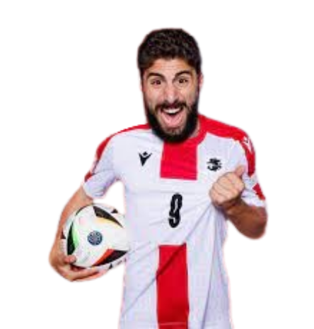

გიორგი მამარდაშვილი
ადრეული კარიერა:
გიორგი მამარდაშვილმა საფეხბურთო კარიერა დაიწყო „გაგრას“ ახალგაზრდულ გუნდში. 2012 წელს შეუერთდა თბილისის „დინამოს“, სადაც სხვადასხვა ასაკობრივ გუნდში თამაშობდა. 2018 წელს მოხვდა პირველი გუნდის განაცხადში, თუმცა ოფიციალურ მატჩებში არ უთამაშია.
„რუსთავი“ (2019):
2019 წელს იჯარით გადავიდა „რუსთავში“. დებიუტი 2 მარტს ჰქონდა „ლოკომოტივთან“. სეზონში 30 მატჩი ჩაატარა, მათგან 9-ში კარი მშრალად შეინახა.
„ლოკომოტივი“ (2020):
2020 წელს იჯარით თბილისის „ლოკომოტივში“ გადავიდა. თავდაპირველად სათადარიგო იყო, თუმცა მალე ძირითადი მეკარის ადგილი დაიმკვიდრა. იმავე წელს გუნდთან ერთად მიაღწია ევროპა ლიგის მესამე საკვალიფიკაციო რაუნდს, სადაც განსაკუთრებული შთაბეჭდილება მოახდინა. წლის ბოლოს საქართველოს ფეხბურთის ფედერაციამ ის საუკეთესო მეკარედ დაასახელა. 2021 წლის იანვარში UEFA-მ ის ევროპის 50 ყველაზე პერსპექტიულ მოთამაშეს შორის დაასახელა.
„ვალენსია“ (2021–დღემდე):
2021 წლის ივნისში იჯარით შეუერთდა „ვალენსიას“, თავდაპირველად სარეზერვო გუნდში. კარგი თამაშის გამო მწვრთნელმა იგი ძირითად გუნდში გადაიყვანა. ლა ლიგაში დებიუტი 13 აგვისტოს „ხეტაფეს“ წინააღმდეგ ჰქონდა. იმავე წლის ბოლოს „ვალენსიამ“ ფეხბურთელი გამოისყიდა. სადებიუტო სეზონში 18 მატჩში მიიღო მონაწილეობა, 8-ჯერ კარი მშრალად შეინახა.
2023 წლის 21 მაისს გამორჩეულად ითამაშა „რეალთან“ მატჩში, რაც ლა ლიგამ ტურის საუკეთესო მომენტად დაასახელა. 2023–24 წლების სეზონში 37 მატჩი ჩაატარა, 13-ში გოლი არ გაუშვია.
სანაკრებო კარიერა:
2016 წელს ითამაშა საქართველოს 17-წლამდე ნაკრებში. 2023 წელს მონაწილეობა მიიღო 21-წლამდელთა ევროპის ჩემპიონატში. ეროვნულ ნაკრებში დებიუტი 2021 წელს ჰქონდა. 2024 წლის 26 მარტს პლეი-ოფის ფინალში საბერძნეთთან პენალტების სერიაში მოიგერია ანასტასიოს ბაკასეტასის პენალტი, რამაც საქართველოს ეროვნულ ნაკრებს პირველად ისტორიაში ევროპის ჩემპიონატზე გასვლის უფლება მისცა.

გიორგი მიქაუტაძე
ადრეული კარიერა
გიორგი მიქაუტაძემ პროფესიონალური კარიერა საფრანგეთის კლუბ „მეცში“ დაიწყო. დებიუტი ჰქონდა 2019 წლის დეკემბერში, რის შემდეგაც კლუბთან ოთხწლიანი კონტრაქტი გააფორმა.
სერენი
2020 წელს ბელგიის კლუბ „სერენში“ იჯარით გადავიდა. მალევე გახდა გუნდის ლიდერი და თავი წარმატებულად დაიმკვიდრა. სწორედ ამ პერიოდში მიიქცია ფართო ყურადღება.
საერთაშორისო კარიერა
მიქაუტაძე საფრანგეთშია დაბადებული, თუმცა საქართველოს ეროვნულ ნაკრებს წარადგენს. დებიუტი ჰქონდა 2021 წელს. 2024 წლის ევროპის ჩემპიონატზე გახდა პირველი ფეხბურთელი, რომელმაც საქართველოს ნაკრების სახელით ევროპის ჩემპიონატზე გოლი გაიტანა და ჯგუფურ ეტაპზე ერთ-ერთი გამორჩეული მოთამაშე იყო.

ხვიჩა კვარაცხელია
ბავშვობა და კარიერის დასაწყისი
ხვიჩა კვარაცხელია, ქართველი პროფესიონალი ფეხბურთელი, თამაშობს იტალიის „ნაპოლიში“ და საქართველოს ეროვნული ნაკრების შემადგენლობაში. იგი მოიაზრება თანამედროვე ფეხბურთის ერთ-ერთ გამორჩეულ ვინგერად, რომლის სტილი, დრიბლინგი და გამჭოლი პასები ხშირად იწვევს შედარებებს ისეთი ლეგენდარული მოთამაშეებთან, როგორებიც არიან ჯორჯ ბესტი და ხვიჩას კუმირი, კახა კალაძე.
ხვიჩამ კარიერა დაიწყო თბილისის „დინამოში“, სადაც თავისი ნიჭით სწრაფად მიიქცია ყურადღება.
კარიერა რუსეთში და დაბრუნება საქართველოში
შემდგომ მან ითამაშა რუსულ „ლოკომოტივში“, სადაც კიდევ უფრო დაიხვეწა და აიღო სოლიდური გამოცდილება საერთაშორისო არენაზე. თუმცა, რუსეთ-უკრაინის ომის ფონზე კვარაცხელიამ კონტრაქტი გაწყვიტა და დაბრუნდა საქართველოში, ბათუმის „დინამოში“. იქ მისი თამაში უმაღლეს დონეზე განაგრძო და სწორედ ამ პერიოდიდან დაიწყო მისი ევროპული გრანდების ყურადღების ცენტრში მოხვედრაც.
წარმატება იტალიის სერია A-ში
2022 წლის ზაფხულში კვარაცხელია ჩაირიცხა იტალიურ კლუბ „ნაპოლიში“, სადაც მალევე გახდა გუნდის ლიდერი. თავისი პირველი სეზონი საოცრად ეფექტურად დაიწყო, გაიტანა გოლები, გააკეთა საგოლე პასები და დააჯილდოვეს არაერთი თვის საუკეთესო მოთამაშის ტიტულით.
მისმა წვლილმა დიდად შეუწყო ხელი ნაპოლის სერია A-ს ჩემპიონობის მოპოვებაში, რაც კლუბისთვის 33 წლის შემდეგ პირველი სკუდეტო იყო. ამან კვარაცხელია იქცა არა მხოლოდ კლუბის, არამედ მთელი ლიგის ერთ-ერთ ვარსკვლავად. იგი ამავე წელს დასახელდა სერია A-ს სეზონის საუკეთესო მოთამაშედ.
საქართველოს ნაკრებში მოღვაწეობა
საქართველოს ნაკრებშიც კვარაცხელია ცენტრალურ ფიგურად ყალიბდება. თავისი შეუპოვრობითა და ტექნიკით, ის ხშირად იქცევა მატჩების განმსაზღვრელ მოთამაშედ. მისი გოლები და ასისტები არა მხოლოდ ქულებს ჰმატებს გუნდს, არამედ დიდ მოტივაციასაც ანიჭებს ნაკრების წევრებსა და გულშემატკივრებს.
ხვიჩა კვარაცხელია როგორც ინსპირაცია
ხვიჩა კვარაცხელია სპორტის მიღმაც რჩება სიმბოლოდ. მისი თავმდაბლობა, შრომისმოყვარეობა და წარმატების მიღწევის გზაზე დადგომა უამრავ ახალგაზრდას შთააგონებს. ის გახდა არა მხოლოდ სპორტული გმირი, არამედ ერთგვარი კულტურული ფენომენი, რომელმაც მსოფლიოს გააცნო საქართველოს სახელი.

გიორგი ქოჩორაშვილი
ადრეული კარიერა - თბილისის „საბურთალო“
პროფესიონალური კარიერა გიორგი ქოჩორაშვილმა 2017 წელს თბილისის „საბურთალოში“ დაიწყო. სადებიუტო მატჩი ჰქონდა იმავე წლის 23 ივლისს, ეროვნული ლიგის მე-19 ტურის შეხვედრაში, სადაც „საბურთალო“ ქუთაისის „ტორპედოს“ დაუპირისპირდა. მატჩი დავით პეტრიაშვილის სტადიონზე გაიმართა და „ტორპედოს“ 2–1 გამარჯვებით დასრულდა. გიორგი მოედანზე 74-ე წუთზე ჩაერთო ვლადიმერ მამუჩაშვილის ნაცვლად.
მომდევნო და ამავე დროს ბოლო მატჩი „საბურთალოს“ რიგებში გიორგიმ 29 ივლისს, ფოთის „კოლხეთის“ წინააღმდეგ ჩაატარა. ეს შეხვედრა ეროსი მანჯგალაძის სტადიონზე გაიმართა და 0–0 დასრულდა. გიორგიმ ამჯერად 62-ე წუთზე შეცვალა ლაშა შინდაგორიძე.
ესპანური ეტაპი – „პერალადა“
2018 წლიდან ქოჩორაშვილმა კარიერა ესპანეთში, რანგით მესამე დივიზიონის კლუბ „პერალადაში“ გააგრძელა. სადებიუტო მატჩი 26 აგვისტოს „საბადელის“ წინააღმდეგ ჩაატარა, რომელიც ფრედ 2–2 დასრულდა. გიორგიმ ამ შეხვედრაში შეუცვლელად ითამაშა.
ბოლო შეხვედრა „პერალადას“ შემადგენლობაში გიორგიმ 2019 წლის 19 მაისს ჩაატარა „ეხეას“ წინააღმდეგ. მატჩი 2–2 დასრულდა და გიორგიმ მოედანი 60-ე წუთზე დატოვა, როცა იგი იაგო ლოპესმა შეცვალა.
ლა ლიგაში გადასვლა - „ლევანტე“
გიორგი ქოჩორაშვილის დებიუტი „ლევანტეს“ ძირითად გუნდსა და ლა ლიგაში 2020 წლის 12 ივლისს შედგა. ის ბილბაოს „ატლეტიკის“ წინააღმდეგ მატჩში 1–2 წაგებისას მოედანზე რუბენ როჩინას ნაცვლად შევიდა.
პირველი გოლი და წარმატება თასზე
2020 წლის 16 დეკემბერს გიორგი ქოჩორაშვილმა „ლევანტეს“ მაისურით სადებიუტო გოლი გაიტანა. ეს მოხდა ესპანეთის თასის პირველ ეტაპზე „მურსიას“ წინააღმდეგ, სადაც „ლევანტემ“ 5–0 იმარჯვა. გიორგი მოედანზე სერხიო ლეონის ნაცვლად შევიდა 69-ე წუთზე.
დაბრუნება ტრავმის შემდეგ
2024 წლის 10 მარტს, ხანგრძლივი პაუზის შემდეგ გიორგი ქოჩორაშვილი დაბრუნდა მოედანზე. „ლევანტემ“ „სპორტინგს“ 1–0 მოუგო და გიორგი 72-ე წუთზე შეცვლაზე შევიდა. თუმცა, 86-ე წუთზე წითელი ბარათი მიიღო და მატჩი ნაადრევად დაასრულა.

ზურიკო დავითაშვილი
ადრეული წლები:
ზურიკომ პროფესიონალური კარიერა 2017 წელს თბილისის „დინამოში“ დაიწყო, სადაც მხოლოდ 6 მატჩი ჩაატარა. 2018 წელს კონტრაქტის ამოწურვის შემდეგ გადავიდა თბილისის „ლოკომოტივში“, სადაც 29 მატჩში 3 გოლი და 3 ასისტი მიითვალა. ამავე წელს გამოცემა The Guardian-მა ის მსოფლიოს 60 საუკეთესო ახალგაზრდა მოთამაშეს შორის დაასახელა.
რუსეთი:
2019 წელს „რუბინთან“ გააფორმა კონტრაქტი და რუსეთის პრემიერლიგაში დებიუტი ხვიჩა კვარაცხელიასთან ერთად შედგა. შემდეგ იჯარით გადავიდა „როტორში“, ხოლო მოგვიანებით კონტრაქტი გააფორმა ტულის „არსენალთან“.
საქართველოში დაბრუნება:
2022 წელს FIFA-ს რეგულაციების საფუძველზე, ზურიკო დაბრუნდა და ბათუმის „დინამოს“ შეუერთდა, სადაც 14 მატჩში 6 გოლი გაიტანა და 3 საგოლე გადაცემა გააკეთა.
საფრანგეთი – „ბორდო“:
2022 წელს გადავიდა იჯარით საფრანგეთის კლუბ „ბორდოში“. სადებიუტო სეზონში 6 გოლი და 3 ასისტი შეასრულა. კლუბმა ზურიკო სრულფასოვნად გადაიბირა და 2027 წლამდე კონტრაქტი გააფორმა. 2023–24 წლების სეზონში 8 გოლი და 8 ასისტი ჰქონდა, რაც მას კლუბის ბოლო ათი წლის ერთ-ერთ საუკეთესო შემტევად აქცევს.
„სენტ-ეტიენი“:
2024 წლის ივლისში ზურიკო გადავიდა საფრანგეთის ლიგა 1-ის კლუბ „სენტ-ეტიენში“, სადაც დებიუტში დუბლი შეასრულა და საგოლე გადაცემაც გააკეთა „ვილიარეალის“ წინააღმდეგ.
